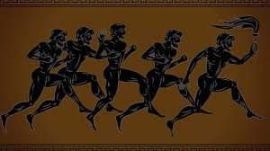
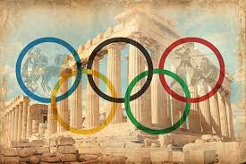
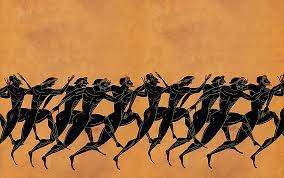
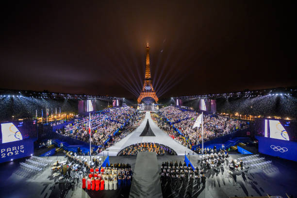
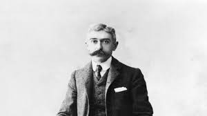
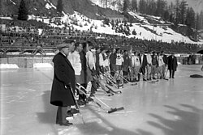
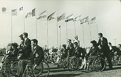
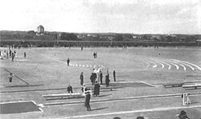
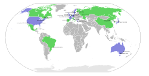

Ancient Olympics
The ancient Olympic Games began in 776 BCE in Olympia, a sacred place in Greece, and were held in honour of the god Zeus.
These games were part of a religious festival and included athletic competitions such as running, wrestling, boxing, chariot racing, and the pentathlon (a set of five sports).
Only free Greek men were allowed to compete, while women were not permitted to participate or even watch.
The winners of these competitions received olive wreaths as prizes and were considered heroes in their cities.
The ancient Olympics continued for more than 1,000 years, but they were eventually banned in 393 CE by the Roman Emperor Theodosius I, who considered them a pagan tradition.



Modern Games
The modern Olympic Games were inspired by the ancient ones but are very different in nature.
They were first held in 1896 in Athens, Greece, with 13 countries participating in 43 events.
Unlike the ancient Games, both men and women can participate today, and the Olympics now feature athletes from nearly every country in the world.
The modern Games have grown into a massive global event, watched by millions of people across the globe.
They celebrate not just competition but also peace, unity, and cultural exchange among nations.

Revival
The revival of the Olympic Games was mainly the vision of Pierre de Coubertin, a French educator and historian.
He believed that sports could help bring nations together and promote peace and friendship.
His efforts led to the establishment of the International Olympic Committee (IOC) in 1894, which still governs the Games today.
Thanks to his work, the first modern Olympic Games were held in Athens in 1896.
Since then, the Olympics have become the largest and most celebrated sporting event in the world.

Changes and Adaptations
Over the years, the Olympic Games have seen many changes.
The Winter Olympics were introduced in 1924 to include sports such as skiing, skating, and ice hockey.
The Paralympic Games, for athletes with disabilities, began in 1960, and the Youth Olympic Games started in 2010 for younger athletes.
Today, the Olympic Games feature more than 30 sports, including athletics, swimming, gymnastics, football, basketball, and many more.
New sports like skateboarding and surfing have also been added to keep the Games exciting and relevant to the younger generation.



Symbols
The Olympics are known for their powerful symbols.
The most famous is the Olympic Rings — five interlocked rings in blue, yellow, black, green, and red — which represent the unity of the five continents of the world.
The Olympic flame, another important symbol, is lit in Olympia, Greece, and carried to the host city through a torch relay.
The flag, motto “Faster, Higher, Stronger – Together,” and the medals awarded to winners also form an essential part of the Olympic tradition.

Nations
When the first modern Olympic Games were held in 1896, only 13 nations participated.
Today, more than 200 nations take part, sending thousands of athletes to compete in both the Summer and Winter Games.
The Games have become a stage where countries, big or small, can showcase their talent, culture, and sporting spirit.
Hosting the Olympic Games has also become a matter of national pride, with cities around the world competing for the honour of being the host.

